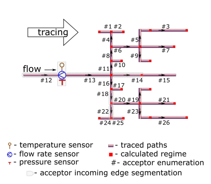

Massively trace forwards thermal-hydraulic regime for district heating network
Source:R/tracefw.R
tracefw.RdTrace values of thermal-hydraulic regime (temperature, pressure, flow rate, and other) in the bunched pipeline along the flow direction using user-provided values of specific heat loss power.
Usage
tracefw(
sender = c(0, 1),
acceptor = c(1, 2),
temperature = c(70, NA_real_),
pressure = c(0.588399, NA_real_),
flow_rate = c(20, NA_real_),
d = c(100, 100),
wth = c(8, 8),
len = c(72.446, 72.446),
loss = c(78.4, 78.4),
roughness = c(0.001, 0.001),
inlet = c(0.5, 1),
outlet = c(1, 1),
elev_tol = 0.1,
method = "romeo",
verbose = TRUE,
csv = FALSE,
file = "tracefw.csv",
use_cluster = FALSE
)Arguments
- sender
identifier of the node which heat carrier flows out. Type: any type that can be painlessly coerced to character by
as.character.- acceptor
identifier of the node which heat carrier flows in. According to topology of test bench considered this identifier should be unique for every row. Type: any type that can be painlessly coerced to character by
as.character.- temperature
sensor-measured temperature of heat carrier (water) sensor-measured on the root node, [°C]. Use
NA_float_s for nodes without temperature sensor. Type:assert_double.- pressure
sensor-measured absolute pressure of heat carrier (water) inside the pipe on the root node, [MPa]. Use
NA_float_s for nodes without pressure sensor. Type:assert_double.- flow_rate
sensor-measured amount of heat carrier (water) on root node that is transferred by pipe during a period, [ton/h]. Type:
assert_double. UseNA_float_s for nodes without flow rate sensor.- d
outside diameter of pipe (i.e.diameter of acceptor's incoming edge), [mm]. Type:
assert_double.- wth
wall thickness of pipe, [mm]. Type:
assert_double.- len
pipe length (i.e. length of acceptor's incoming edge), [m]. Type:
assert_double.- loss
user-provided value of specific heat loss power for each pipe in tracing path, [kcal/m/h]. Values of the argument can be obtained experimentally, or taken from regulatory documents. Type:
assert_double.- roughness
roughness of internal wall of pipe (i.e. acceptor's incoming edge), [m]. Type:
assert_double.- inlet
elevation of pipe inlet, [m]. Type:
assert_double.- outlet
elevation of pipe outlet, [m]. Type:
assert_double.- elev_tol
maximum allowed discrepancy between adjacent outlet and inlet elevations of two subsequent pipes in the traced path, [m]. Type:
assert_number.- method
method of determining Darcy friction factor:
romeovatankhahbuzzelli
Type:
assert_choice. For more details seedropp.- verbose
logical indicator: should they watch tracing process on console? Type:
assert_flag.- csv
logical indicator: should they incrementally dump results to csv- file while tracing? Type:
assert_flag.- file
name of csv-file which they dump results to. Type:
assert_characterof length 1 that can be used safely to create a file and write to it.- use_cluster
utilize functionality of parallel processing on multi-core CPU. Type:
assert_flag.
Value
data.frame containing results (detailed log) of tracing in
narrow format:
nodeTracing job. Identifier of the node which regime parameters is calculated for. Values in this vector are identical to those in argument
acceptor. Type:assert_character.tracingTracing job. Identifiers of nodes from which regime parameters are traced for the given node. Identifier
sensoris used when values of regime parameters for the node are sensor readings. Type:assert_character.backwardTracing job. Identifier of tracing direction. It constantly equals to
FALSE. Type:assert_logical.aggregationTracing job. Identifier of the aggregation method associated with traced values. For forward tracing the only option is
identity. Type:assert_character.lossTraced thermal hydraulic regime. Normative specific heat loss power of adjacent pipe, [kcal/m/h]. Type:
assert_double.fluxTraced thermal hydraulic regime. Normative heat flux of adjacent pipe, [W/m²]. Type:
assert_double.QTraced thermal hydraulic regime. Normative heat loss of adjacent pipe per day, [kcal]. Type:
assert_character.temperatureTraced thermal hydraulic regime. Traced temperature of heat carrier (water) that is associated with the node, [°C]. Type:
assert_double.pressureTraced thermal hydraulic regime. Traced pressure of heat carrier (water) that is associated with the node, [MPa]. Type:
assert_double.flow_rateTraced thermal hydraulic regime. Traced flow rate of heat carrier (water) that is associated with the node, [ton/h]. Type:
assert_double.jobTracing job. Value of tracing job counter. For forward tracing value of
jobcounts the number of traced paths from root node. Type:assert_count.
Type: assert_data_frame.
Details
They consider the topology of district heating network represented by
m325nxdata:

Tracing starts from sensor-equipped root node and goes forward, i.e along
the flow direction. Function traceline serves under the
hood for tracing identified linear segments from root node to every
terminal node. Hence they only need root node to be equipped with sensors.
Sensors at other nodes are redundant in forward tracing, since the tracing
algorithm by no means consider them for tracing.
Moreover in the forward tracing algorithm they assume the flow of heat carrier is distributed proportionally to the cross-sectional area of the outgoing pipeline. Actually, a lot of reasons may cause significant deviations from this assumption. As a result, the sequence of paired backward/forward tracing may be divergent for regime parameters.
Though some input arguments are natively vectorized their individual values
all relate to common part of district heating network, i.e. associated with
common object. It is due to isomorphism between vector representation and
directed graph of this network. For more details of isomorphic topology
description see m325nxdata.
They are welcome to couple the algorithm with functionality of data.table.
See also
Other Regime tracing:
dropg(),
dropp(),
dropt(),
m325tracebw(),
m325tracefw(),
m325traceline(),
tracebw(),
traceline()
Examples
library(pipenostics)
# Minimum two nodes should be in district heating network graph:
tracefw(verbose = FALSE)
#> node tracing backward aggregation loss flux Q temperature
#> 1 1 sensor FALSE identity NA NA NA 70.00000
#> 2 2 1 FALSE identity 78.4 290.2324 136314.4 69.71603
#> pressure flow_rate job
#> 1 0.5883990 20 0
#> 2 0.5704644 20 1
# Consider isomorphic representation of District Heating Network graph:
DHN <- m325nxdata
# * remove irrelevant parameters from the test bench:
DHN[c("a", "year", "insulation", "laying", "beta", "exp5k")] <- NULL
DHN[c("temperature", "pressure", "flow_rate")] <- NA_real_
# * avoid using numeric identifiers for nodes:
DHN$sender <- sprintf("N%02i", DHN$sender)
DHN$acceptor <- sprintf("N%02i", DHN$acceptor)
# * provide current regime parameters for root node:
root_node <- 12
DHN[root_node, "temperature"] <- 70.4942576978 # [°C]
DHN[root_node, "pressure"] <- 0.6135602014 # [MPa]
DHN[root_node, "flow_rate"] <- 274.0 # [ton/h]
rm(root_node)
# * provide actual values of specific heat loss power, [kcal/m/h], for each
# segment N01 - N26. Since N12 is a root node, the specific heat loss
# power for this acceptor is set to 0 (or may be any other numeric value).
actual_loss <- c(
96.8, 96.8, 71.2, 116.7, 71.3, 96.8, 78.5, 116.7, 28.6, 24.5,
116.7, 0.0, 153.2, 96.8, 96.8, 116.7, 24.5, 116.7, 28.6, 96.8,
78.5, 116.7, 71.3, 96.8, 96.8, 71.1
)
# Trace the test bench forward for the first time:
do.call(
"tracefw",
c(as.list(DHN), list(loss = actual_loss), verbose = FALSE, elev_tol = .5)
)
#> node tracing backward aggregation loss flux Q temperature
#> 1 N12 sensor FALSE identity NA NA NA 70.49426
#> 2 N13 N12 FALSE identity 153.2 189.6782 363201.66 70.43903
#> 3 N11 N13 FALSE identity 116.7 216.0084 84024.00 70.40629
#> 4 N08 N11 FALSE identity 116.7 216.0084 84024.00 70.37151
#> 5 N04 N08 FALSE identity 116.7 216.0084 39981.42 70.34565
#> 6 N01 N04 FALSE identity 96.8 238.8988 92567.90 70.22589
#> 11 N02 N04 FALSE identity 96.8 238.8988 92567.90 70.22589
#> 41 N06 N08 FALSE identity 96.8 238.8988 140514.11 70.20993
#> 51 N05 N06 FALSE identity 71.3 329.9358 61890.68 69.95637
#> 61 N03 N05 FALSE identity 71.2 329.4730 132045.81 69.41539
#> 52 N07 N06 FALSE identity 78.5 290.6026 136488.26 69.85206
#> 53 N09 N06 FALSE identity 28.6 132.3445 20646.23 70.12534
#> 31 N10 N11 FALSE identity 24.5 181.3953 12873.08 70.32103
#> 21 N14 N13 FALSE identity 96.8 238.8988 158721.02 70.32909
#> 32 N15 N14 FALSE identity 96.8 238.8988 184787.33 70.20109
#> 22 N16 N13 FALSE identity 116.7 216.0084 84024.00 70.40629
#> 33 N17 N16 FALSE identity 24.5 181.3953 12873.08 70.32103
#> 34 N18 N16 FALSE identity 116.7 216.0084 86292.65 70.37057
#> 42 N20 N18 FALSE identity 96.8 238.8988 155101.48 70.19221
#> 54 N19 N20 FALSE identity 28.6 132.3445 35673.58 70.04606
#> 55 N21 N20 FALSE identity 78.5 290.6026 136488.26 69.83434
#> 43 N22 N18 FALSE identity 116.7 216.0084 86292.65 70.31475
#> 56 N24 N22 FALSE identity 96.8 238.8988 59137.06 70.23825
#> 57 N25 N22 FALSE identity 96.8 238.8988 59137.06 70.23825
#> 58 N23 N20 FALSE identity 71.3 329.9358 88934.49 69.82786
#> 62 N26 N23 FALSE identity 71.1 329.0103 131860.35 69.28763
#> pressure flow_rate job
#> 1 0.6135602 274.000000 0
#> 2 0.5979750 274.000000 1
#> 3 0.5939089 106.926829 1
#> 4 0.5903066 100.637016 1
#> 5 0.5896032 64.407690 1
#> 6 0.5873626 32.203845 1
#> 11 0.5873626 32.203845 2
#> 41 0.5831283 36.229326 3
#> 51 0.5745519 10.169635 3
#> 61 0.5603297 10.169635 3
#> 52 0.5694825 15.890055 4
#> 53 0.5775906 10.169635 5
#> 31 0.5645381 6.289813 6
#> 21 0.5846161 60.146341 7
#> 32 0.5690643 60.146341 7
#> 22 0.5939089 106.926829 8
#> 33 0.5645381 6.289813 8
#> 34 0.5902093 100.637016 9
#> 42 0.5854615 36.229326 9
#> 54 0.5758935 10.169635 9
#> 55 0.5766115 15.890055 10
#> 43 0.5886914 64.407690 11
#> 56 0.5872599 32.203845 11
#> 57 0.5872599 32.203845 12
#> 58 0.5710985 10.169635 13
#> 62 0.5568771 10.169635 13